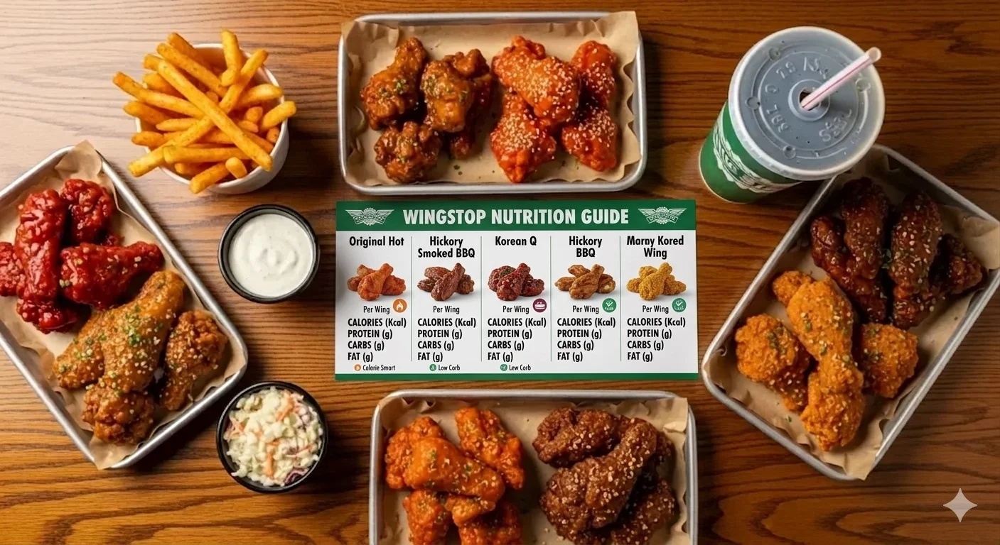

ORDERING GUIDE
High-Protein Wingstop Orders: Build a Better Meal

A high-protein Wingstop order is not simply the largest combo. Chicken supplies the protein; fries, loaded sides, dips and sugary drinks can enlarge the meal without adding comparable protein.
Protein-First Rules
- Choose chicken before the combo.
- Compare total protein and calories.
- Breading and sauces change the meal.
- Count every side, dip and drink.
Define What “High Protein” Means for the Meal
A high-protein order can mean several things: the greatest total protein, more protein for a fixed calorie range, fewer carbohydrates, or a meal that supports fullness. Those goals can point toward different formats. A large tender order may deliver more total protein simply because it contains more food, while a smaller classic-wing order may better suit someone limiting breading.
Set the target before opening the cart. If total protein is the only priority, compare servings directly. If calories, sodium or carbohydrates also matter, calculate those at the same time. Calling the biggest box the “best” hides the tradeoff that matters most to the reader.
Restaurant protein values are estimates based on standard formulations. Piece size and preparation vary, especially with bone-in wings. Use the current Wingstop nutrition guide for planning, but do not treat a restaurant estimate as a laboratory measurement of the exact box.

How the Three Chicken Formats Compare
Classic wings include meat, skin and bone. The bone contributes to piece count but not edible protein, so per-piece comparisons require attention. Classic wings are unbreaded and can suit someone who wants protein without the carbohydrate contribution of breading. Their skin and flavor still affect calories and fat.
Boneless wings are breaded white-meat pieces. They are easy to count and share, but breading changes carbohydrates and calories. A boneless piece is not nutritionally identical to a classic wing simply because both are called wings. Use the exact format and serving entry.
Crispy tenders are larger breaded pieces and can make the chicken portion easier to see. A tender meal may deliver substantial protein, but dips and a loaded side can quickly dominate the total calories. Compare a tender order with the extras you will actually eat rather than comparing chicken alone.
The Wingstop ordering guide explains texture and appetite differences. For protein planning, translate that preference into the current numbers for the exact quantity.
Piece Count Matters More Than a “Healthy” Label
Six pieces, eight pieces and 10 pieces represent different meals. A lower-calorie six-piece order may also contain less protein and leave a hungry customer adding fries later. A realistic portion chosen upfront is more useful than an artificially small order that does not satisfy the meal.
Multiply per-piece protein and calories by the number ordered. If the box is split between flavors, add the values for each half separately. Tenders may be listed by piece or serving; boneless wings may use a different serving definition. Confirm units before calculating.
For a group, calculate chicken by person before adding sides. Seven to 10 wings per adult is a planning range, not a protein prescription. Children, athletes, other food and appetite can change the total. Use the party-pack guide to organize group quantities.
Flavor Can Change the Nutrition Profile
Sauces and dry seasonings alter calories, carbohydrates, sugar and sodium. They may add little protein. A flavor that fits one goal can work poorly for another. Dry does not automatically mean lower calorie, and extreme heat does not guarantee a leaner sauce.
Choose flavors for taste first, then verify their values. A meal someone dislikes is not a sustainable nutrition strategy. Lemon Pepper and Original Hot create contrast in a mixed order, but their suitability depends on the complete target. Use the flavor guide to narrow the options.
Extra sauce, extra seasoning and dipping sauce make published quantities less precise. If protein-to-calorie efficiency matters, avoid unmeasured extras. Ask for sauce on the side only when you intend to portion it rather than use the container automatically.
Build the Order Around Chicken, Not the Combo
A combo can be convenient, but the included drink and fries do not necessarily support a protein-first goal. Compare wing-only or tender-only pricing with a combo containing items you may not want. “Included” is not the same as nutritionally free.
Veggie sticks provide volume and crunch without turning the side into the center of the meal. Seasoned Fries can still fit when deliberately budgeted, but loaded fries add potato, cheese sauce and ranch. Review the fries and sides guide before upgrading.
Dips contribute flavor and calories but relatively little protein compared with chicken. One measured ranch or bleu cheese may fit; several cups used without tracking can change the meal substantially. Water or an unsweetened drink avoids adding calories without protein.
Ready-Made Protein-Focused Orders
Classic-wing order
Choose eight or 10 classic wings in one or two verified flavors, veggie sticks and water. This is the clearest approach for someone prioritizing unbreaded chicken and a straightforward piece count.
Boneless order
Choose a realistic boneless piece count in one flavor, veggie sticks and one dip. Include breading in the carbohydrate and calorie calculation instead of treating white meat as the complete story.
Tender order
Choose tenders in one flavor, one measured dip and a side only if it belongs in the plan. Tenders can be protein-forward, but a loaded side can make the meal far larger than expected.
Higher-calorie training-day order
A larger chicken portion with seasoned fries may fit someone intentionally consuming more energy. That is a different goal from maximizing protein per calorie. State the goal honestly instead of calling every large order optimal.

Protein Per Calorie, Per Dollar and Per Order
Protein per calorie asks how much protein accompanies the meal's energy. Protein per dollar asks how much protein the customer receives for the price. Total protein asks only for the final grams. An item can perform well on one measure and poorly on another.
Local prices make per-dollar comparisons unstable. Promotions and group packs change the result. Use the final local cart and current nutrition data together. Do not compare a national estimated price with a store-specific serving and present the ratio as exact.
For most customers, the best practical order balances all three measures with taste and fullness. A slightly less efficient flavor can still be the better choice if it makes the chicken enjoyable without requiring several dips or sides.
Mistakes That Make a Protein Order Less Useful
Do not count the protein in the chicken while ignoring the calories in every other component. Do not assume boneless means lean. Do not choose an unrealistically small meal, then add food without calculating it. Do not use a third-party macro table when a current official document is available.
Do not turn a general restaurant guide into medical or sports-nutrition advice. Kidney disease, pregnancy, eating disorders, diabetes and specialized athletic programs can change protein needs. A qualified professional should guide those decisions.
Finally, avoid false precision. Published values help compare orders, but piece size and preparation vary. Use a sensible range and focus on repeatable decisions: chicken first, verified flavor, deliberate side, measured dip and appropriate drink.
A Step-by-Step Calculation
Begin with the exact chicken entry and serving unit in Wingstop's current guide. If the value is per piece, multiply by the count. For two flavors, calculate each portion separately. Add the complete side, the amount of dip likely to be eaten and the drink.
Compare that result with a chicken-only version. The difference shows what the combo components contribute. This is more useful than calling fries bad or ranch unhealthy; it reveals whether those items serve the person's energy and enjoyment goals.
Calculate protein per calorie only when that ratio helps the decision. Do not compare total protein in a 10-piece order with protein per piece in another format. Consistent units prevent a larger serving from appearing efficient only because it contains more food.
How Goals Change the Best Order
Higher protein with fewer carbohydrates: classic wings, a verified flavor, veggie sticks and an unsweetened drink may fit. Higher protein and energy: a larger chicken portion with fries may be reasonable. Budget-focused protein: compare final local prices for packs, combos and chicken alone.
For post-workout convenience, select a realistic portion before hunger drives automatic upgrades. Water may be more useful than a sugary drink, but the whole daily diet matters more than the timing label attached to one restaurant meal.
Final Checklist
- Define total protein, protein per calorie or protein per dollar.
- Select the chicken format and count.
- Verify flavor nutrition.
- Add every side, dip and drink.
- Compare the combo with chicken alone.
- Review allergens and sodium.
How to Compare Two Final Carts
Build both candidate orders in the same local cart. Record price, chicken count, flavors, sides, dips and drinks. Use the current nutrition guide to calculate each complete meal. Comparing two finished carts prevents an inexpensive base price from hiding fees or unwanted components.
Consider leftovers realistically. Extra chicken can improve value when it will be refrigerated promptly and eaten, but uneaten sides are waste rather than savings. The best protein order is the one that matches appetite, budget and the complete nutrition target without relying on food that will be discarded.
Review sodium alongside protein. Wings, seasoning and dips can all contribute. Someone can meet a protein target while overshooting another limit, which is why one positive nutrient should not become the only measure of a meal.
Final Recommendation
A protein-focused cart should also be realistic enough to finish and repeat. Ordering more chicken than you need does not improve the decision if it becomes an unplanned second meal with extra dips and sides. Save the exact cart, serving units and calculations so the comparison can be repeated when prices or nutrition information change.
Build the order in this sequence: define the protein goal, choose the chicken format, select a realistic piece count, verify flavor nutrition, and add sides or dips deliberately. Compare the completed cart with a chicken-only version before paying.
For many diners, eight or 10 pieces of chicken with veggie sticks and an unsweetened drink provide the clearest protein-focused structure. That is a planning framework, not a universal prescription. Current nutrition data, appetite, budget and professional advice should determine the final meal.
FAQ
Which Wingstop item has the most protein?
It depends on serving size. Compare total protein for the exact current portion rather than the item name alone.
Are classic wings better than boneless wings for protein?
They have different formulations. Classic wings are unbreaded; boneless wings use breaded white meat. Compare protein, calories and carbohydrates for the quantities you would order.
Can fries fit a high-protein meal?
Yes, when they are a deliberate energy source, but they do not replace the chicken as the protein center.
Protein goals related to a medical condition or athletic plan should be discussed with a qualified professional.